Un berger trouve un anneau qui rend invisible. Resterait-on juste sans aucun risque d’être puni ?
D’après Platon, République, livre II (357a–362a). Les dialogues sont imaginés, les idées sont celles du texte. C’est Glaucon qui raconte l’histoire : il plaide ici contre la justice pour obliger Socrate à la défendre.
Touchez une image pour l’agrandir, puis passez d’une case à l’autre avec les flèches ‹ › ou celles du clavier.
Planche 1
Le défi de Glaucon
GlauconSocrate, tu nous as réfutés, mais tu ne nous as pas convaincus. Je vais plaider contre la justice, pour que tu la défendes mieux.
SocrateVoyons donc ce que tu as à dire.
Athènes, dans la République de Platon. Glaucon, frère de Platon, n’est pas satisfait des arguments de Socrate sur la justice (357a-358d).
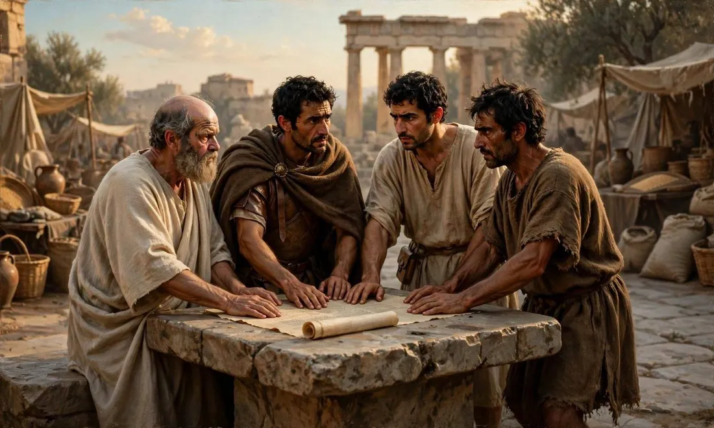
Un hommeJe ne peux pas voler sans risquer d’être volé.
Un autreAlors faisons des lois. Pour notre sécurité à tous.
Selon une thèse courante, la justice est un compromis : commettre l’injustice est avantageux, mais la subir est pire. Faute de pouvoir faire l’une sans subir l’autre, on fait des lois (358e-359b).
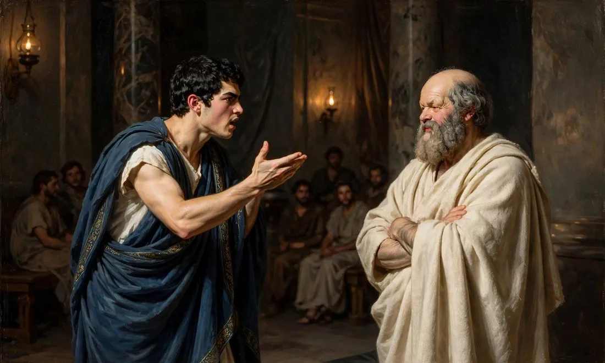
GlauconÉcoute l’histoire d’un berger de Lydie, et dis-moi si l’on reste juste sans crainte d’être puni.
SocrateJe t’écoute.
Glaucon expose la thèse courante : on pratique la justice à contrecœur, par impuissance à commettre l’injustice impunément (359b). Pour la tester, il raconte l’histoire d’un berger lydien, ancêtre de Gygès (359c-d).
Planche 2
Le berger de Lydie
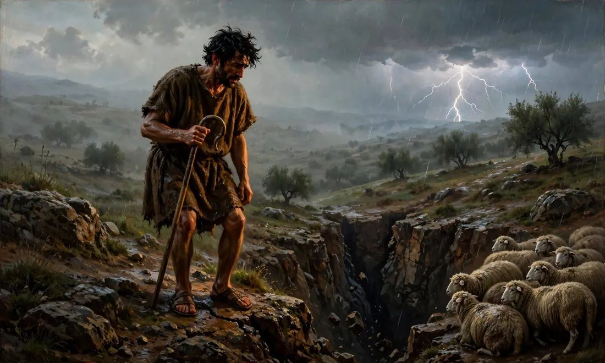
GygèsLa terre s’ouvre ! Un gouffre, juste là…
Gygès est berger au service du roi de Lydie. Après de violentes pluies et un tremblement de terre, le sol s’ouvre là où il fait paître son troupeau (359d).
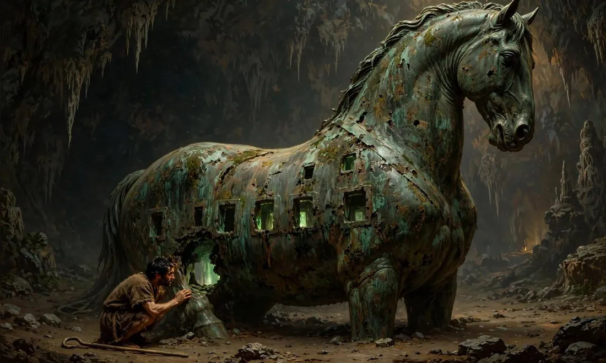
GygèsUn cheval d’airain, creux… et ces petites fenêtres.
Il descend dans le gouffre et y découvre un cheval d’airain (de bronze) creux, percé de petites ouvertures (359d).
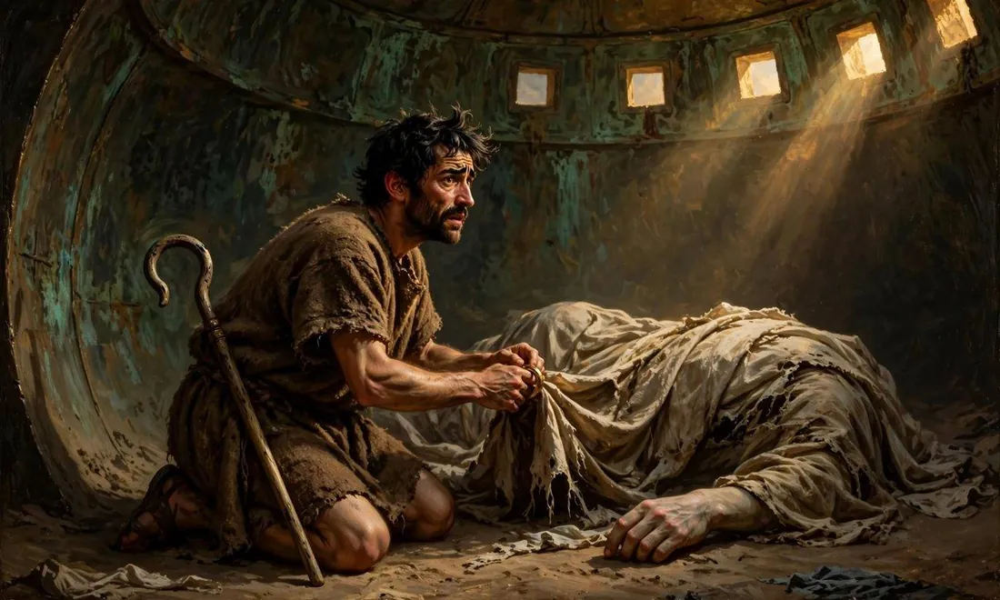
GygèsUn anneau d’or. Personne n’en saura rien.
Dedans, un cadavre plus grand qu’un homme, sans rien sur lui qu’un anneau d’or à la main. Gygès le prend et remonte (359d-e).
Planche 3
L’anneau
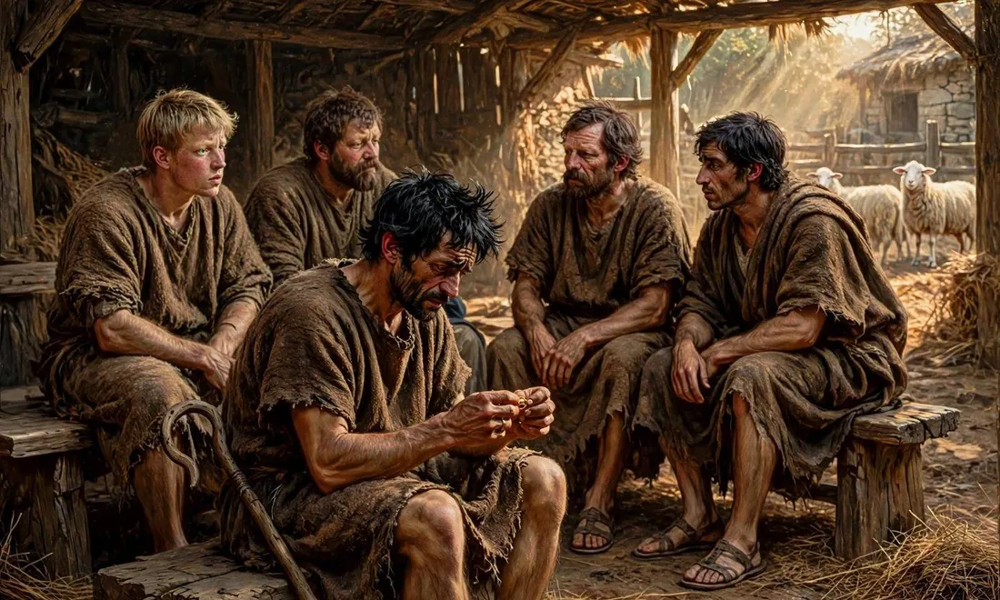
Les bergers se réunissent chaque mois pour faire leur rapport au roi. Gygès y vient avec l’anneau, et en tourne par hasard le chaton (la partie qui porte la pierre) vers l’intérieur de sa main (359e-360a).
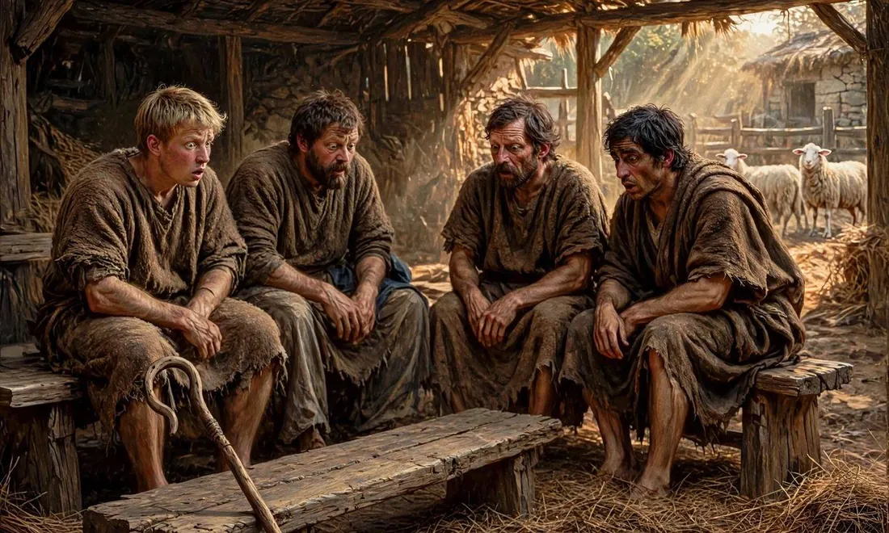
Un bergerOù est-il passé ?
GygèsIls ne me voient plus !
Il devient invisible : ses voisins parlent de lui comme s’il était parti. En tournant le chaton vers l’extérieur, il réapparaît (360a).
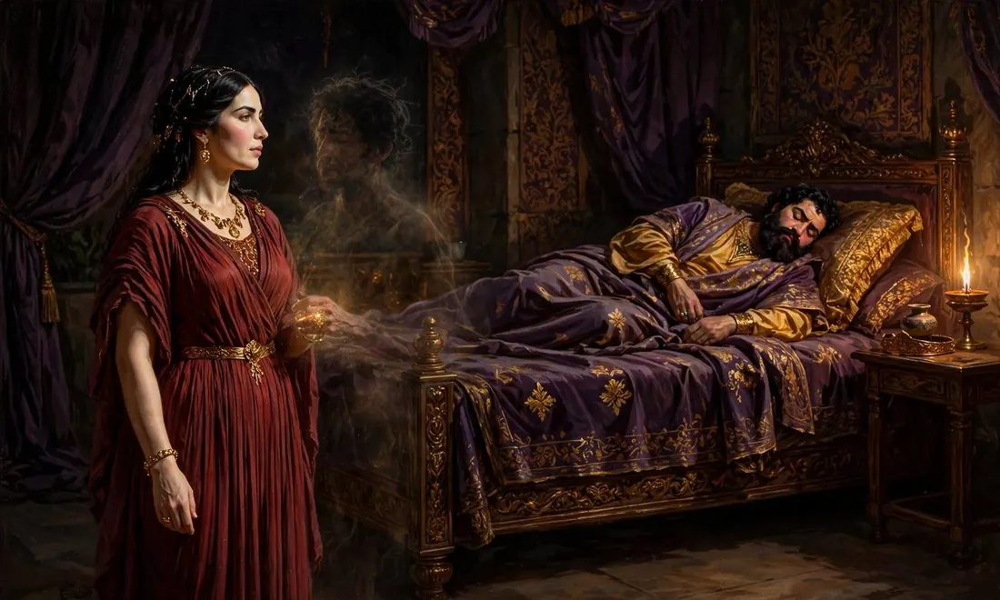
Il se fait désigner pour porter le rapport au roi, séduit la reine, s’attaque avec elle au roi et prend le pouvoir (360a-b).
Le messager Il s’arrange pour être choisi comme messager auprès du roi (360a).
La reine Arrivé au palais, il la séduit (360b).
Le complot Avec elle, il s’attaque au roi et le tue (360b).
Le pouvoir Il s’empare du royaume (360b). Le simple berger devient roi.
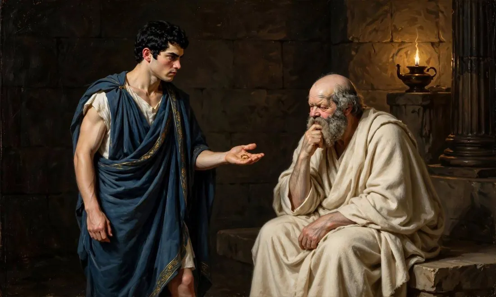
GlauconMets-toi cet anneau au doigt. Qui s’abstiendrait de prendre ce qu’il veut ?
Glaucon en tire la leçon : personne n’aurait une âme assez ferme pour s’abstenir de prendre sur le marché, d’entrer chez les gens, de tuer ou de délivrer qui il veut (360b-d).
Planche 4
Deux anneaux
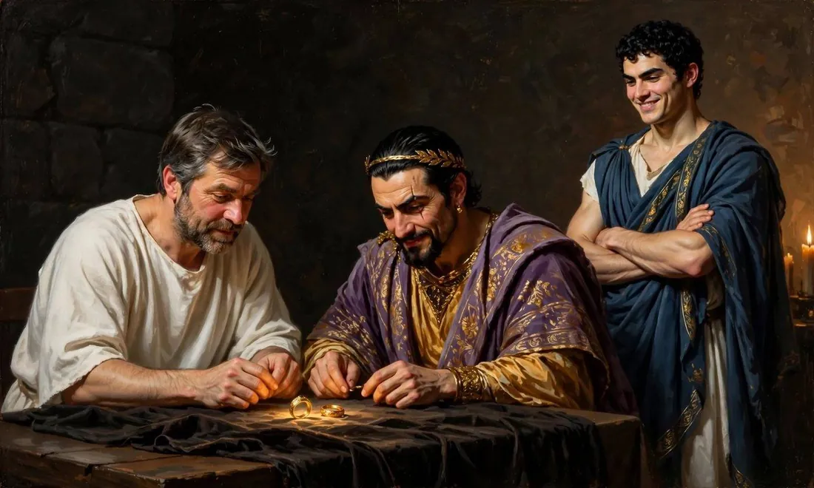
GlauconDonne un anneau à chacun. Je te parie qu’ils feront la même chose.
Glaucon propose l’expérience de pensée : deux anneaux, l’un pour un homme réputé juste, l’autre pour un homme réputé injuste (360b).
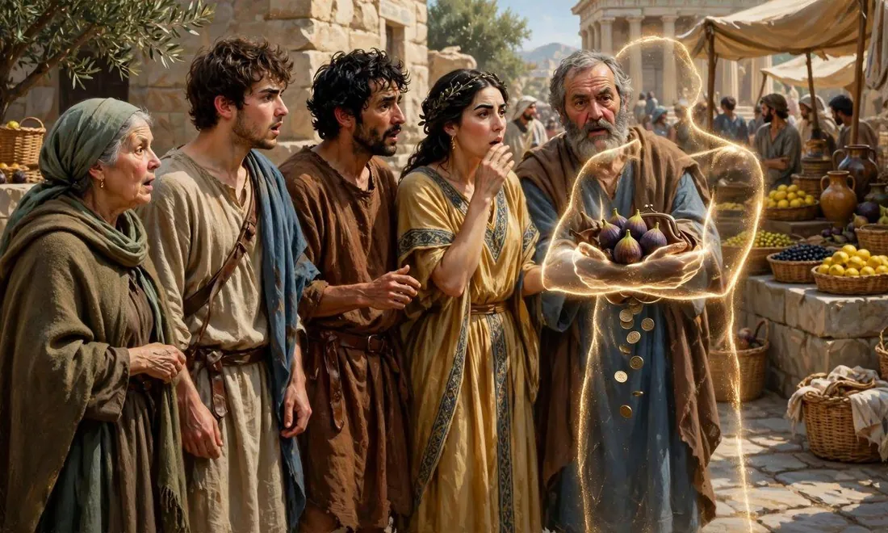
Un marchandMes figues ! Où sont-elles passées ?
Invisible, on prendrait sur la place ce qu’on veut, on entrerait chez qui on veut, on tuerait et on délivrerait à son gré, comme un dieu parmi les hommes (360b-c).
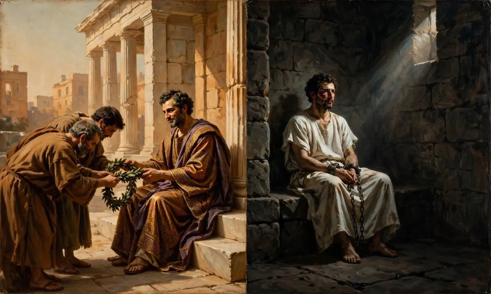
Glaucon pousse l’idée : l’homme parfaitement injuste, réputé juste, est honoré. Le juste, réputé injuste, est enchaîné et maltraité (360e-362a).
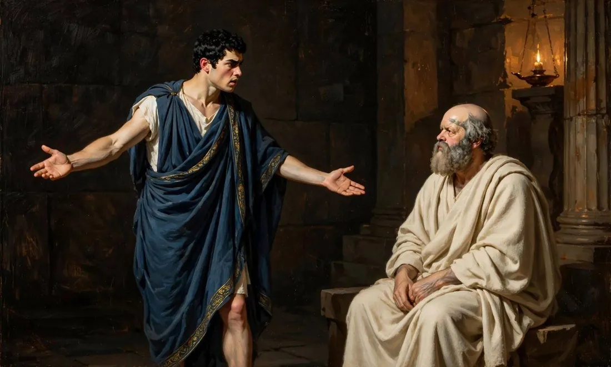
GlauconChoisis : injuste et honoré de tous, ou juste et méprisé de tous. Prouve-moi que le second vaut mieux.
SocrateVoilà ce qu’il me faut établir.
Toute la suite de la République répond à ce défi : Socrate devra montrer que la justice vaut mieux que l’injustice, pour elle-même (362d-367e).